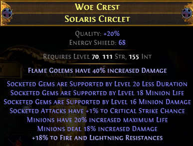
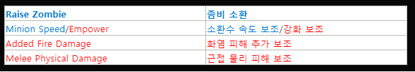
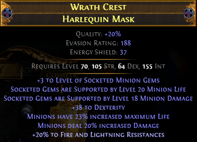

4. 스킬 젬 + 장비
* 아이템의 시세는 리그 초-중-후반에 따라 차이가 큽니다.
* 굵게 표시된 스킬젬은 액티브, 아닌 경우 서포트 스킬젬입니다.
* ★ 표시된 장비는 필수 장비입니다.
헬멧 30 카오스, 갑옷 30 카오스, Empower 5 카오스, 나머지 1~2 카오스씩 해서 6-70 카오스 정도면 기본 세팅은 완성됩니다.
1) ★ 헬멧 : 약 30 카오스 ~ 1엑 이상


헬멧에 서포트 스킬젬 모드가 붙은 아이템을 통해, 원래는 4링크이지만 실제로는 그 이상의 효율을 내도록 합니다.
Q) Less Duration은 이름부터가 '지속시간이 짧아짐'이라는 효과 같은데요?
A) Less Duration은 '지속시간을 줄이되 데미지를 늘려주는' 서포트 스킬젬입니다. 그런데 좀비는 지속시간이 없기 때문에(죽지만 않으면 사라지지 않습니다) 데미지 상승 효과만 받게 됩니다.
Q) Added Fire Damage는 뭔가요?
A) 공격에 파뎀을 추가해주는 서포트 스킬젬입니다. 무기에서 Adds ~ Fire Damage 뭐시기 옵션을 보셨을텐데, 그거랑 비슷한 겁니다.
미니언의 공격에 파뎀을 추가해줍니다. 나중에 자세히 설명이 들어갈텐데, 지금은 이런 게 있다고만 기억해두세요.
Q) (19.5.4 추가내용) Less Duration, Minion Damage, Minion Life 3개 붙은 아이템이 없는데요?
A) 그러면 2개만 있는 걸로 사세요! 간단하죠? 지금 검색해봤는데, 2개 옵션만 있는건 최저가가 1카오스입니다. 무려 1카요!!
Q) (19.5.4 추가내용) 그럼 3개 중 2개를 선택하라면, 뭐가 좋을까요?
A) Less Duration을 제외한 Minion Damage, Minion Life 2옵션을 챙겨주세요. Less Duration은 20렙 기준 19% 모어뎀이라, 20렙 기준 49%인 Minion Damage에 비해 효과가 낮습니다.
첨언하자면... 2개만 있는 거면 3개 다 있는 것보다 성능이 떨어지는 것도 맞고, 그래서 많은 분들께서 불안하셔서 댓글을 달아주시는 거라 생각합니다.
게임 시작한 지 이제 두달 된 제가 하기엔 너무 주제넘는 말인 것 같지만, 게임을 조금만 천천히 느긋하게 보셨으면 좋겠어요. 저 투구 3옵션 못 챙겼다고 맵핑 못하는 것도 아니고, 액트 못 미는 것도 아닙니다. 선술했듯이, 저는 저 투구를 아틀라스 6-10티어 맵 돌 때쯤 샀습니다.
그리고 이거 없어도 빨간맵까지도(반사맵만 아니면) 돌 수 있다고 생각합니다. 속도의 차이는 있겠지만, 그래도 좀비 피통이 돼지라서 죽지는 않을 겁니다. 그러니 조급해하지 마시고 천천히 진행해보시는 것을 추천합니다.
---------------------------------------------------------
* 19.5.4 추가내용
이제 슬슬 우버엘더를 도전하고 있는데, 16T 미노맵에서 좀비들이 죽어나가서 업그레이드를 고려해봤습니다.
최소 1 엑잘 이상 자금의 여유가 있는 분들은 다음 옵션도 있다는 것을 소개해드리고 싶습니다.
★ 추천이지 필수는 아닙니다 ★

시세 1엑 이상으로 매물들이 있습니다. 저는 1.5엑에 구매했습니다.
헬멧에서는 Less Duration 대신 to Level of Socketed Minion Gems 옵션을 넣었고, 스킬젬에서는 Minion Speed 대신 Empower 젬을 넣었습니다.
to Level of Socketed Minion Gems 옵션과 Empower 젬을 통해 좀비 젬렙을 5까지 추가할 수 있습니다. 이 세팅으로 좀비의 피통은 4만에서 5.3만까지, 좀비 DPS는 6만에서 9.7만까지 상승합니다.
단, Minion Speed를 빼서 좀비의 이동속도가 느려집니다. 그냥 감수하고 다니시거나, Convocation을 액티브로 사용해서 해결하시면 됩니다.